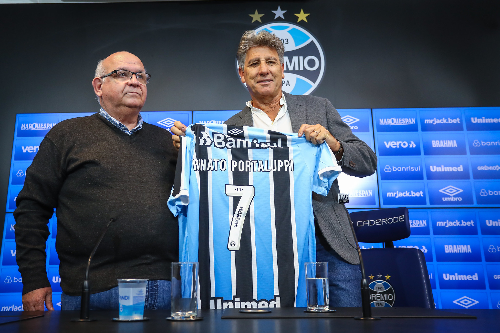

A volta do imortal a elite
A volta do Grêmio, o "imortal", a segunda divisão .
9 de novembro de 2021, dia marcado pelo rebaixamento do Grêmio a segunda divisão da elite do futebol brasileiro.
Nenhuma pessoa do Rio Grande do Sul acreditava na surpresa do pessimo começo de campeonato brasileiro do Grêmio, após um começo de ano marcado por grandes contratações, como a vinda de Douglas Costas ao tricolor, ele que por sua vez tomou atitudes desreipeitosas a instituiçao Grêmio e ao torcedor gremista. Sendo assim, a idolatria á Douglas, por parte da torcida gremista, acabou.
As atitudes da gestão do Grêmio, foram as culpadas pelo rebaixamento, uma sequencias de erros, uma gestão ultrapassada fizeram o gremio cair pela terceira vez.
A LUTA DE 2022

O incio de 2022 foi um "bom" inicio, sendo campeao graucho pelo pentacampeonato tricolor, porem ao inicio do Brasileirao os mesmos erros estavam voltando a tona
O Virar de chaves, se chama Renato Portaluppi

A contratação de Renato Portaluppi foi um dos poucos acertos da antiga direçao do Grêmio no ano de 2022, com uma missão dificil, o "Rei" aceita assinar com o Grêmio. O objetivo de Renato era se manter entre os quatros primeiros e consequentimente se classificar para a elite. Renato, juntamente com elenco gremista de 2022, consegue o objetivo.
TABELA SERIE B 2022
| TIME | POSIÇÃO |
PONTOS |
| CRUZEIRO |
1° |
78 |
GRÊMIO |
2° |
68 |
BAHIA |
3° |
62 |
VASCO |
4° |
62 |